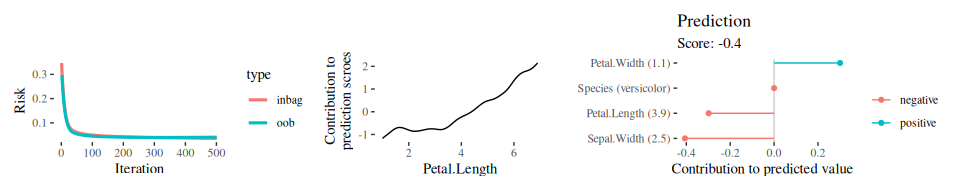

Documentation | Contributors | Release Notes
Overview
Component-wise boosting applies the boosting framework to statistical models, e.g., general additive models using component-wise smoothing splines. Boosting these kinds of models maintains interpretability and enables unbiased model selection in high dimensional feature spaces.
The R package compboost is an alternative implementation of component-wise boosting written in C++ to obtain high runtime performance and full memory control. The main idea is to provide a modular class system which can be extended without editing the source code. Therefore, it is possible to use R functions as well as C++ functions for custom base-learners, losses, logging mechanisms or stopping criteria.
For an introduction and overview about the functionality visit the project page.
Installation
CRAN version:
install.packages("compboost")Examples
The examples are rendered using compboost 0.1.2.
The fastest way to train a Compboost model is to use the wrapper functions boostLinear() or boostSplines():
cboost = boostSplines(data = iris, target = "Sepal.Length",
oob_fraction = 0.3, iterations = 500L, trace = 100L)
ggrisk = plotRisk(cboost)
ggpe = plotPEUni(cboost, "Petal.Length")
ggicont = plotIndividualContribution(cboost, iris[70, ], offset = FALSE)
library(patchwork)
ggrisk + ggpe + ggicont
For more extensive examples and how to use the R6 interface visit the project page.
mlr learner
Compboost also ships an mlr3 learners for regression and binary classification which can be used to apply compboost within the whole mlr3verse:
library(mlr3)
ts = tsk("spam")
lcboost = lrn("classif.compboost", iterations = 500L, bin_root = 2)
lcboost$train(ts)
lcboost$predict_type = "prob"
lcboost$predict(ts)
#> <PredictionClassif> for 4601 observations:
#> row_ids truth response prob.spam prob.nonspam
#> 1 spam spam 0.5540564 0.4459436
#> 2 spam spam 0.8636362 0.1363638
#> 3 spam spam 0.8241109 0.1758891
#> ---
#> 4599 nonspam nonspam 0.2052605 0.7947395
#> 4600 nonspam nonspam 0.2326108 0.7673892
#> 4601 nonspam nonspam 0.2624187 0.7375813
# Access the `$model` field to access all the `compboost` functionality:
plotBaselearnerTraces(lcboost$model) +
plotPEUni(lcboost$model, "charDollar")
Save and load models
Because of the usage of C++ objects as backend, it is not possible to use Rs save() method to save models. Instead, use $saveToJson("mymodel.json") to save the model to mymodel.json and Compboost$new(file = "mymodel.json") to load the model:
cboost = boostSplines(iris, "Sepal.Width")
cboost$saveToJson("mymodel.json")
cboost_new = Compboost$new(file = "mymodel.json")
# Save the model without data:
cboost$saveToJson("mymodel_without_data.json", rm_data = TRUE)Benchmark
- A small benchmark was conducted to compare
compboostwithmboost. For this purpose, the runtime behavior and memory consumption of the two packages were compared. The results of the benchmark can be read here. - A bigger benchmark with adaptions to increase the runtime and memory efficiency can be found here.
Citing
To cite compboost in publications, please use:
Schalk et al., (2018). compboost: Modular Framework for Component-Wise Boosting. Journal of Open Source Software, 3(30), 967, https://doi.org/10.21105/joss.00967
@article{schalk2018compboost,
author = {Daniel Schalk, Janek Thomas, Bernd Bischl},
title = {compboost: Modular Framework for Component-Wise Boosting},
URL = {https://doi.org/10.21105/joss.00967},
year = {2018},
publisher = {Journal of Open Source Software},
volume = {3},
number = {30},
pages = {967},
journal = {JOSS}
}